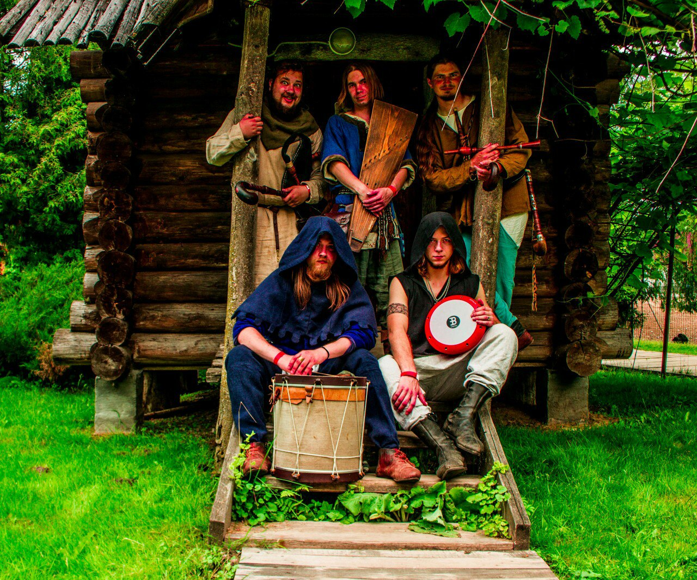
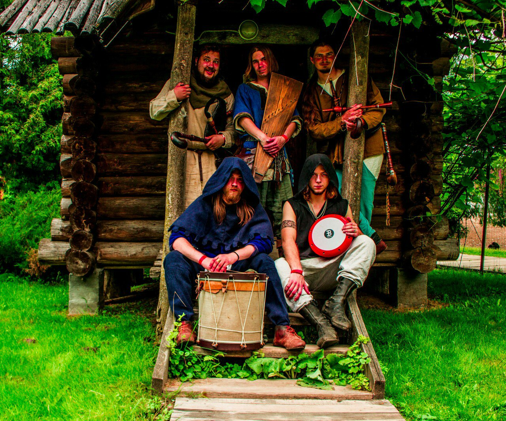

Хмельны Вiр

Группа "Хмельны Вiр" была основана в мае 2016 года. Коллектив исполняет средневековую и народную музыку различных эпох.

Группа "Хмельны Вiр" была основана в мае 2016 года. Коллектив исполняет средневековую и народную музыку различных эпох.

Приветствуем Вас на сайте фестиваля средневековой культуры "Рубон 2017" ! Очередной раз фестиваль Рубон состоится в самом древнем городе Беларуси 1-3 сентября 2017 года. На нашем сайте Вы найдёте всю нужную информацию про фестиваль Рубон в Полоцке